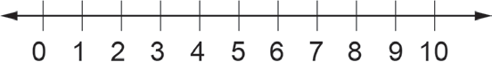
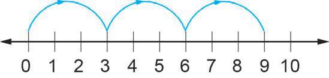

Mfano wa tatu
Andika vigawe vya 3 kwa kutumia mchoro ufuatao:

Njia
Anzia kwenye 0 na ruka hatua tatutatu kuelekea kulia.

Kwa hiyo, vigawe vya 3 ni 3, 6, 9, . . .
Andika vigawe vya 3 kwa kutumia mchoro ufuatao:

Anzia kwenye 0 na ruka hatua tatutatu kuelekea kulia.

Kwa hiyo, vigawe vya 3 ni 3, 6, 9, . . .